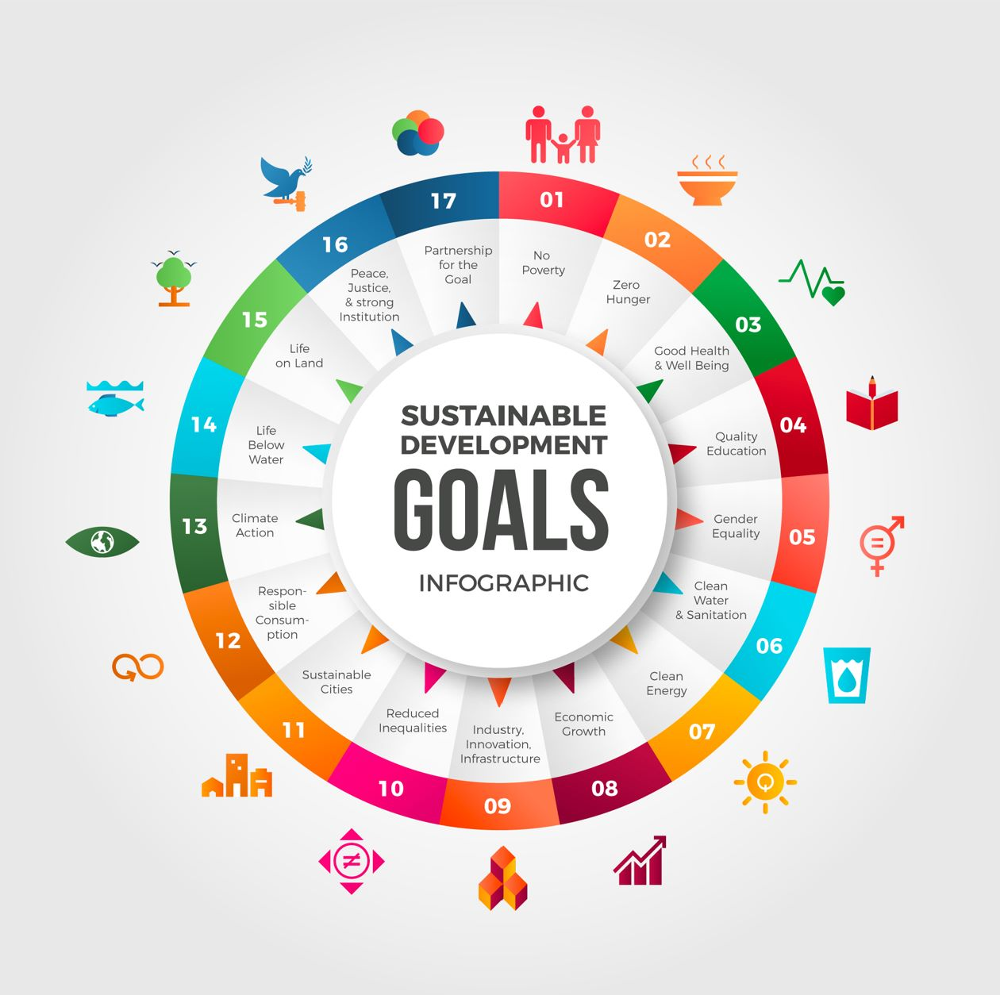

Project By Aditri, Aditya, Anushka, Anvi, Arsheya & Rushil
On September 25th of 2015, the United Nations Summit in New York City set 17 sustainable development goals (SDGs) linked to 169 targets. The aim is to give people and governments clear guidelines on what is to be done to “transform our world” by 2030. At its heart are the 17 Sustainable Development Goals (SDGs), which are an urgent call for action by all countries - developed and developing - in a global partnership. They recognize that ending poverty and other deprivations must go hand-in-hand with strategies that improve health and education, reduce inequality, and spur economic growth – all while tackling climate change and working to preserve our oceans and forests. Today, the Division for Sustainable Development Goals (DSDG) in the United Nations Department of Economic and Social Affairs (UNDESA) provides substantive support and capacity-building for the SDGs and their related thematic issues, including water, energy, climate, oceans, urbanization, transport, science and technology, the Global Sustainable Development Report (GSDR), partnerships and Small Island Developing States. DSDG plays a key role in the evaluation of UN systemwide implementation of the 2030 Agenda and on advocacy and outreach activities relating to the SDGs.
